Multimedia Designer
Hi, I'm Michelle
Product design, UX/UI, videography, photography and graphic design. Thoughtful, user-focused work across every medium.
Recent Work
More Work
Testimonials
UX/UI Design
UX Work
Selected projects from research through to shipped features, leaning minimal and user-focused.
Canopy
A safe, low-pressure space for university students and tutors to connect outside the classroom. Designed and prototyped with a team of six over nine weeks, Canopy placed Runner-Up at PIP25C2.
Project Overview
Disciplines
- UX/UI Design
- User Research
- Prototyping
Tools
- Figma
- Notion
As part of a nine-week PIP25C2 competition sprint, I worked within a team of six to research, design, and prototype Canopy end-to-end, a platform that makes reaching out to a tutor feel safe, personal, and low-pressure rather than transactional.
The Problem
Campus life has returned, and yet meaningful, in-person connection remains difficult to spark. Existing tools serve a purpose, but they often fall short of encouraging the full spectrum of campus interaction. The experience is fragmented across third-party apps, with little support for low-pressure, organic engagement across the broader university community.
See SolutionResearch
We used mixed methods to explore the problem space.
- Desktop research + competitive analysis → identified gaps in existing student connection platforms: too manual, poor integration, one-way communication.
- Surveys → 65% of students and tutors said casual interactions would help engagement, but most had formed fewer than two meaningful connections in a year.
- Interviews → revealed barriers like unclear boundaries, time pressures, and a lack of safe spaces for connection.
Key Insights
Class interactions are transactional and leave little room for connection.
Connection feels out of reach due to time, workload, and student confidence.
Ambiguous professional boundaries create social discomfort.
Students and tutors both value deeper connection, but lack the structure to act on it.
Defining the Opportunity
From these shared pain points, we identified opportunities to:
- Provide clear communication channels.
- Create informal environments for mentorship.
- Support structured continuity beyond class time.
- Establish feedback loops for tutors and students.
Reduce the perceived effort of reaching out, so that genuine connection can emerge naturally?
The Solution
Personal Trees, Not Profiles
A short personality quiz grows your "tree", a gentler, low-stakes way to introduce yourself before a word is exchanged.
Booking, Without the Awkwardness
Pick a time, confirm a location, done. Small, clear decisions that lower the barrier to actually pressing "book."
An AI Assistant That Listens
After a meeting, the assistant summarises key takeaways so students can stay present instead of taking notes.
Outcomes & Retrospective
Canopy was recognised as Runner-Up at PIP25C2, successfully addressing barriers to student–tutor connection through personal trees, streamlined booking, and AI-assisted reflection.
- Validated solutionAddressed barriers to student–tutor connection with features like personalised trees, streamlined booking, and AI reflections.
- Impact potentialDesigned to make mentorship easier, more meaningful, and measurable for both students and tutors.
- Lessons learnedLearned to synthesise research into actionable insights, balanced empathy with feasibility, and gained experience collaborating in a multidisciplinary team.
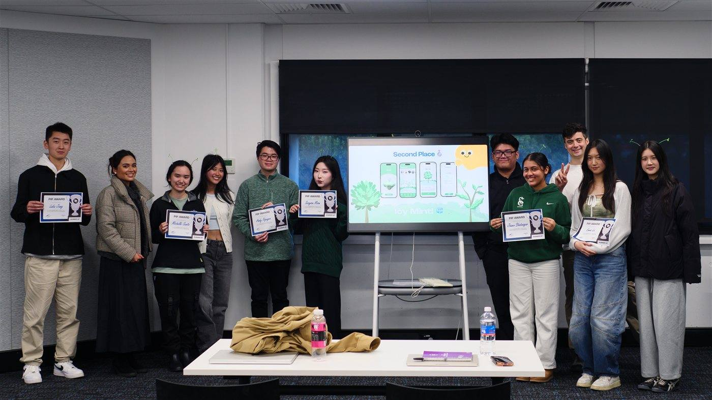
The Canopy team at PIP25C2, second place, runner-up.
More Case Studies
Friends n Family
A digital experience for Friends N Family, a fund management business reimagining wealth as a vehicle for legacy and community, bridging traditional finance with soulful, relationship-centred investing.
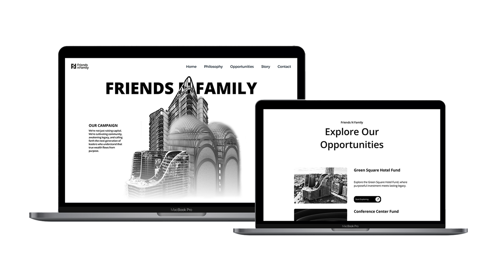
Project Overview
Disciplines
- UI Design
Tools
- Figma
- Notion
Working independently over one to two months, I collaborated directly with the founder to craft a website that bridges traditional finance with soulful, relationship-centred investing. Through iterative feedback sessions, I developed a visual language rooted in quiet luxury and authentic connection, honouring both heritage and the future.
The Challenge
Translate Friends N Family's brand philosophy into a digital presence that embodies quiet luxury and authentic connection, bridging the gap between traditional wealth management and a soulful, relationship-centred approach.
See SolutionDesign Approach
Reviewed the brand book to understand the "better together" philosophy and quiet luxury aesthetic.
Explored visual references, landing on a black-and-white, minimal language with timeless elegance.
Translated the brand guide into Figma mockups: intimate yet elevated, with clean lines and premium imagery.
Checked in regularly with the founder to keep each direction aligned with the brand's vision.
Solution
Quiet Luxury, Not Loud Wealth
A visual language built on restraint: clean lines and premium imagery that communicate legacy and intimacy without ever feeling flashy.
Black & White, On Purpose
A raw, minimal aesthetic that balances sophistication with timeless elegance, honouring both heritage and the future.
Built Through Direct Collaboration
Iterative feedback sessions with the founder shaped the final direction, keeping authentic connection at the core of every decision.
Outcomes & Retrospective
Initially, I explored a different aesthetic approach. However, after sharing reference images with the founder, he identified specific elements that resonated with the brand vision, particularly a black and white, minimalist website with elevated simplicity. This feedback became a turning point that shaped the final direction.
- Lessons learnedThe importance of collaborative iteration and staying flexible when translating brand essence into digital form, and how working directly with stakeholders enables quick pivots that keep design aligned with vision.
- Project statusCurrently on hold at the founder's request. The designs shown represent the initial phase, establishing the visual foundation and core pages before pausing for strategic timing.
More Case Studies
Videography
Motion graphics and video work, with a particular focus on typography. From dynamic motion design to short films and social-first reels.
Others
Scheduling Features
Configurable worker scheduling for complex shift patterns on swipejobs, a SaaS recruiting platform operating across the US and UK, designed across desktop and app.
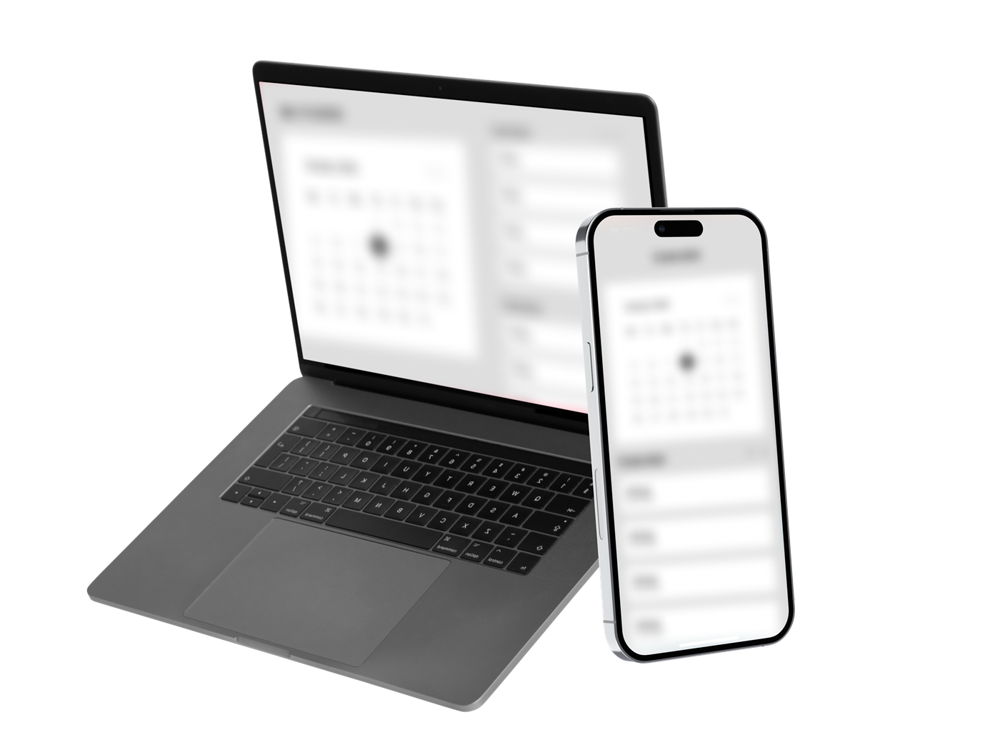
Note: Screens shown are illustrative. Actual product UI is confidential.
Project Overview
Disciplines
- Product Design
- Cross-functional Collaboration
Tools
- Figma
- Jira
- Claude
As a Graduate Product Designer at swipejobs, I worked on scheduling functionality for a shift-based recruiting platform used by workers and clients across the US and UK. With 20+ designs shipped or in development across app and web, I worked closely with product managers, engineers, and senior stakeholders in a fast-paced environment to bring configurable scheduling features to life.
The Challenge
Workers on the platform pick up shifts with highly variable patterns: different shift lengths, break rules, and rostering conventions across the US and UK. Scheduling features needed to be flexible enough to handle this complexity without overwhelming the people using them, and without breaking labour compliance rules that differ by region.
See SolutionDesign Approach
Less a single research phase, more continuous validation: propose a direction, pressure-test it with the Senior Product Designer, then sanity-check feasibility with engineering before locking anything in. That loop is what surfaced gaps early, including US and UK requirement nuances that weren't obvious until the details were actually worked through.
Ran testing sessions across the product, raising bugs and improvement stories to the team based on issues identified.
Used Claude to stress-test design ideas and surface edge cases early, before they reached engineering.
Mapped edge cases directly with engineering to keep designs technically feasible without adding friction for clients or talent.
Worked cross-functionally with product managers, engineers, and senior stakeholders on a fast-moving, iterative roadmap.
Solution
Desktop & App Parity
Scheduling features designed consistently across web and mobile, so workers and clients get the same experience wherever they log in.
Compliance-Aware Flexibility
Configurable rules that adapt to US and UK labour requirements without adding friction for the people scheduling shifts.
Edge-Case Coverage
Worked directly with engineering to handle unusual shift patterns before they became support issues.
Note: Actual product screens can't be shown here due to confidentiality.
Outcomes & Retrospective
20+ designs shipped or in development, contributing directly to a product used by workers and clients across two countries.
- Validated by senior stakeholdersPositive feedback from senior product designers and engineering leads confirmed the designs met the scope and requirements we set out to solve.
- Shipped impactDelivered configurable scheduling functionality across app and web, balancing flexibility with compliance.
- Cross-functional growthLearned to design within engineering constraints in real time, working directly with PMs and engineers in a fast-paced environment.
- Lessons learnedUsing Claude to stress-test ideas before handoff meaningfully cut down on late-stage edge-case surprises.
More Case Studies
Never Have I Ever
A motion typography video made for a video editing competition hosted by OfflineTV (OTV), set to their original K-pop-inspired track "Never Have I Ever" featuring LilyPichu, QuarterJade, and Yvonnie.
Project Overview
Disciplines
- Motion Design
- Typography
Tools
- After Effects
As a solo motion designer, I animated dynamic lyric typography synced to an original K-pop-inspired track for an OfflineTV video editing competition, translating the song's playful, polished aesthetic into motion.
My Role & Process
Using Adobe After Effects, I designed and animated dynamic lyrics with a pink-themed colour scheme, inspired by the song's official album cover and branding. The project focused on syncing text with music, using motion, colour, and typography to reflect the song's playful and polished aesthetic.
- ToolAdobe After Effects, animated and synced frame-by-frame to the track.
- PaletteA pink-toned colour scheme pulled directly from the song's official album cover.
- Why it matteredA chance to push my motion design skills while celebrating the creative work of OTV and its community.
More Case Studies
Deep
A short documentary telling the story of Chloe Osborn, a Paralympic swimmer, exploring her challenges and achievements both in and out of the pool. Made in collaboration with Scarlett Brouner and Imogen Mabin.
Project Overview
Disciplines
- Sound Recording
- Video Editing
- Documentary Filmmaking
Tools
- Premiere Pro
- Boom Microphone
As part of a three-person production team, I worked as sound recordist and co-editor on a short documentary following Paralympic swimmer Chloe Osborn, shaping the film's pacing and emotional tone from raw footage to final cut.
My Role & Process
I was responsible for sound recording using a boom microphone, and I also contributed to the editing process using Adobe Premiere Pro, where I helped shape the film's narrative flow and emotional tone. The project went through multiple iterations, with our team continuously refining the structure, pacing, and sound design to best reflect Chloe's story.
Outcomes & Retrospective
Through close collaboration, we brought Chloe's experience to life on screen, and the film was recognised at the Short and Sweet Film Festival.
- Recognition1st Place, Heat 3 · People's Choice at the Short and Sweet Film Festival, and named a finalist overall.
- Collaborative processMultiple iterations as a three-person team, continuously refining structure, pacing, and sound design to best reflect Chloe's story.
- Lessons learnedShaping a documentary's emotional tone through sound and pacing showed me how much a story rides on what you hear, not just what you see.
More Case Studies
One Global Capital Shorts
Short-form video content for One Global Capital, a Sydney-based property development and investment firm, produced for the One Global Masterclass social media platforms.
Project Overview
Disciplines
- Video Editing
- Brand Storytelling
- Social Content
Tools
- Premiere Pro
- After Effects
As a multimedia content creator for One Global Capital, I produce short-form video covering major property developments and CEO thought leadership, working directly with the CEO to translate his vision into polished social content.
My Role & Process
As a multimedia content creator, my role involves producing engaging videos that highlight the company's major developments, especially in Green Square and Eastlakes. I also produce inspirational content featuring the CEO, where he shares his thoughts on leadership, personal growth, and the company's broader vision, using Adobe Premiere Pro and After Effects.
I collaborate closely with the CEO to understand his goals for each piece and regularly refine content based on his feedback, combining creative storytelling with strategic messaging while aligning with the company's brand and values.
Outcomes & Retrospective
The content has seen strong engagement on Instagram, with a steady stream of positive comments, likes, and shares.
- Audience engagementConsistent positive engagement across posts, from comments to shares.
- CEO content resonanceMotivational, thought-leadership posts perform especially well, with followers regularly asking to see more of his thinking.
- Ongoing partnershipProducing content for One Global Capital since 2024, reflecting a sustained working relationship built on trust in the creative direction.
More Case Studies
Feeling Hungry at UNSW?
Two promotional videos made with UNSW Retail and Leasing, showcasing the food and beverage options available on campus to students, staff, and visitors.
Don't Blink Ad
UNSW Foods Wrapped
Project Overview
Disciplines
- Video Editing
- Storyboarding
- Social Content
Tools
- After Effects
- Premiere Pro
As part of the UNSW Retail and Leasing content team, I directed and edited two promotional videos showcasing campus food, translating stakeholder briefs into fast-paced, trend-driven social content.
My Role & Process
I started by developing storyboards based on input from my manager, Marion, and her vision for the campaign. The two projects were the Don't Blink Ad, a fast-paced, typography-driven video inspired by Apple's "Don't Blink," and UNSW Foods Wrapped, a playful take on Spotify Wrapped highlighting the most popular campus food spots in a year-in-review style.
Both videos were produced using Adobe After Effects and Premiere Pro. These pieces went through multiple drafts, with regular feedback sessions and email correspondence to refine the visuals and messaging.
More Case Studies
Photography
Photos taken over the years, shot on a FujiFilm X-S10.
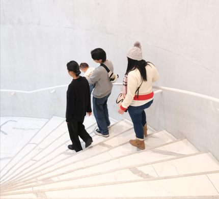
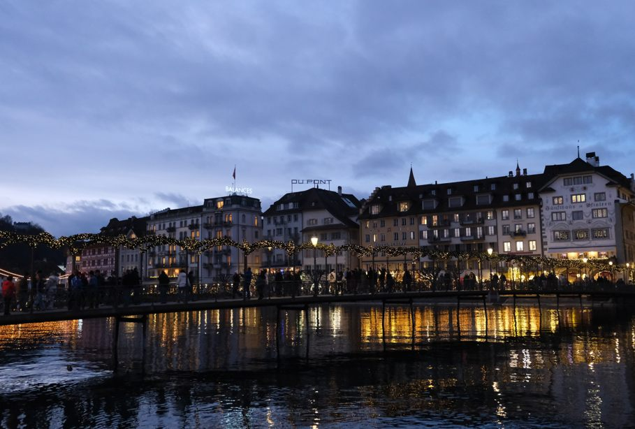
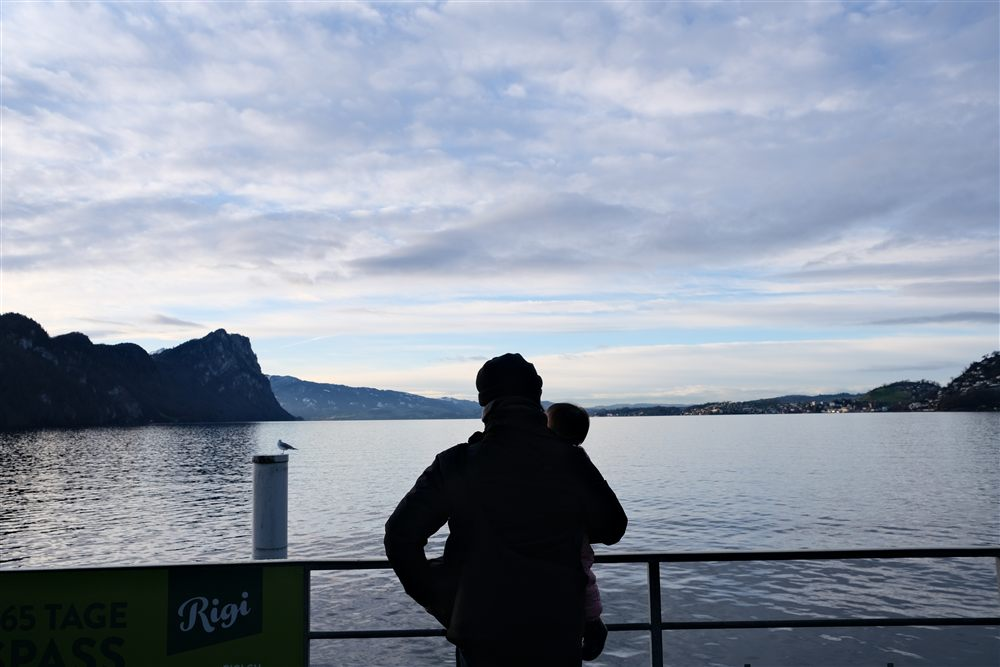
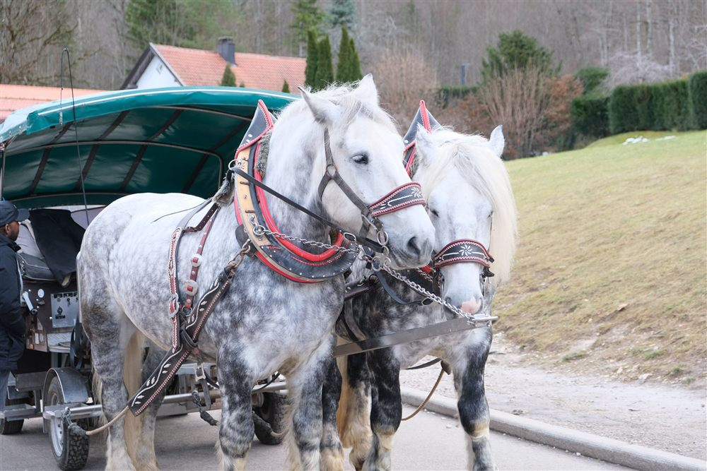
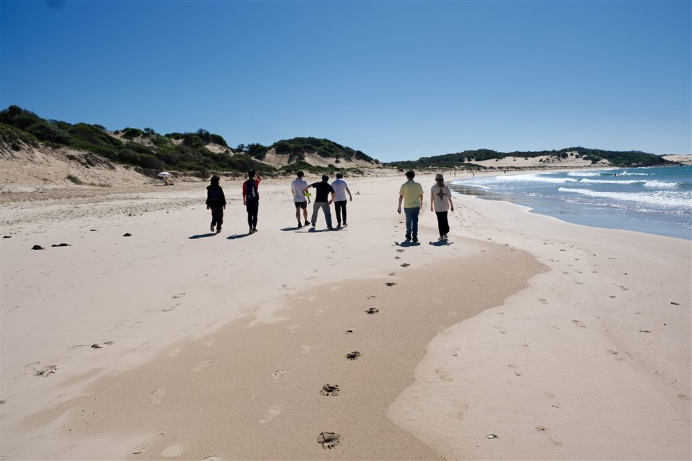
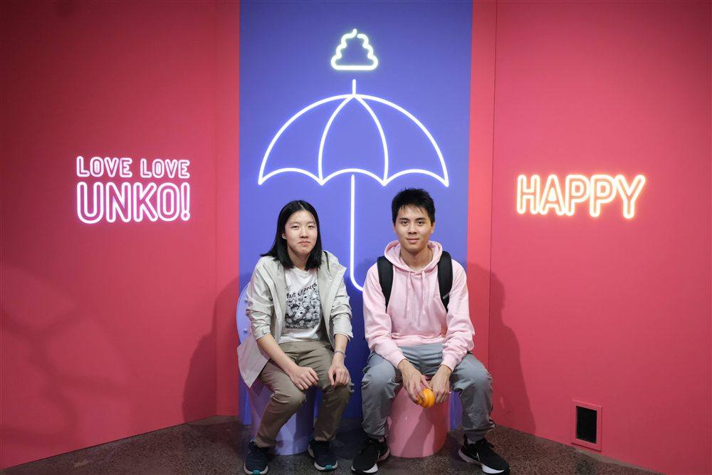
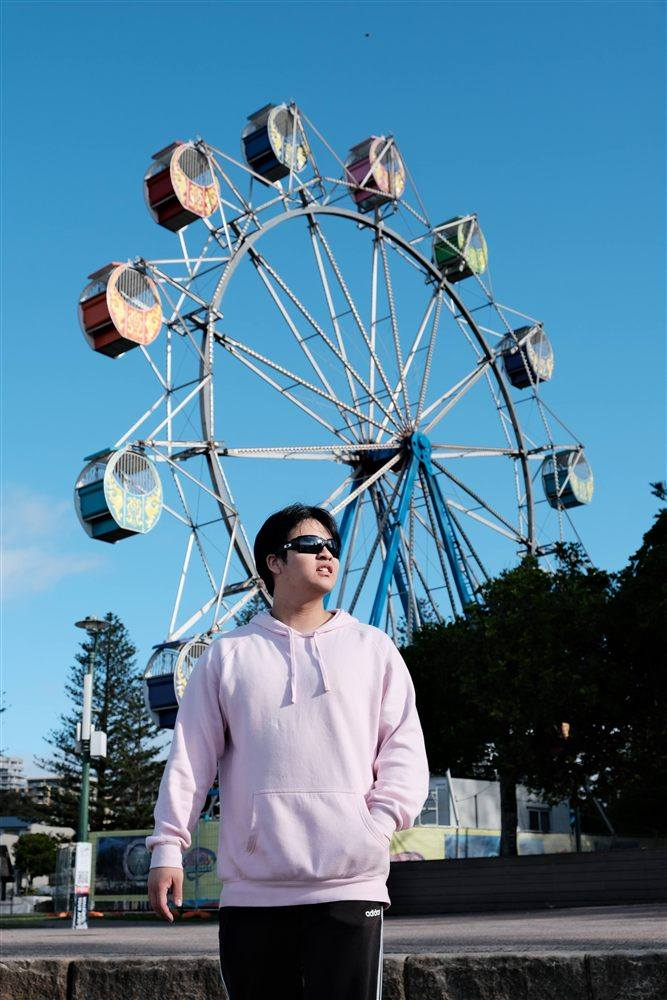
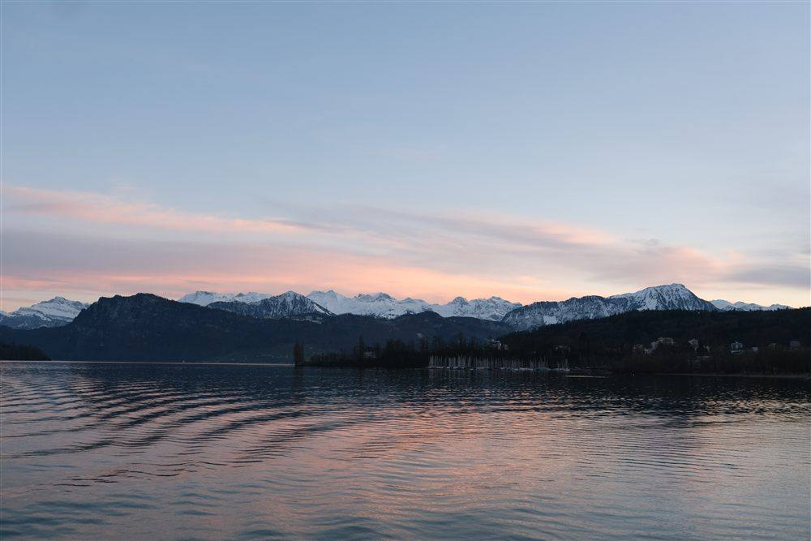
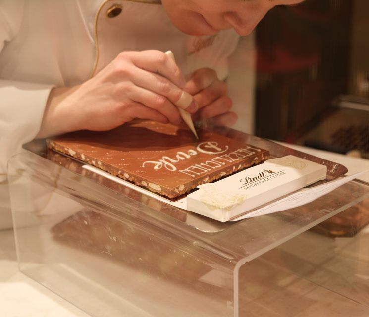
Graphic Design
Banner Design Showcase
A selection of banners designed for various projects.
About Me
Hi, I'm Michelle, a multimedia designer with expertise in UX/UI, videography, graphic design, and photography. With years of experience using Adobe Creative Suite and Figma, I'm eager to join a creative team where I can contribute my skills and help bring compelling projects to life.
I believe the best work happens through strong collaboration and environments that encourage bold creative thinking.
Outside of Work
Outside of work, I'm either online gaming with my crew (Riot Games has my heart), filming K-pop dance covers, or enjoying way too much good food with even better company.
Experience
Resume
A look at my creative experience, plus a few words from people I've worked with.
Experience
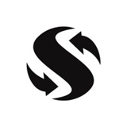
Graduate Product Designer
▸
- Carried out testing sessions across the product, raising bugs and improvement stories to the team based on issues identified.
- Designed new functionality across app and web experiences for a SaaS recruiting platform operating across the US and UK, with 20+ designs shipped or in development.
- Built slide decks and demo videos used in executive and client-facing presentations.
- Regularly worked cross-functionally with product managers, engineers, and senior stakeholders in a fast-paced environment.
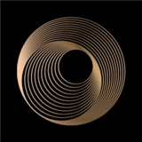
Multimedia Designer
▸
- Created engaging video content to showcase One Global Capital buildings and CEO, increasing social media engagement.
- Designed multimedia materials for marketing campaigns to attract potential clients and investors.
- Collaborated with the team to develop creative strategies for promoting the company's brand.
- Designed website layouts for partner Friends n Family.
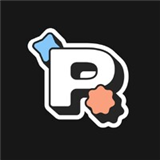
UX/UI Designer
▸
- Worked as part of a 6-person team, collaborating with external stakeholders and industry mentors to develop user-focused design solutions.
- Supported user experience research and iterative design of wireframes and interactive prototypes using Figma.
- Participated in ideation and planning sessions via Notion to refine concepts.
- Contributed to a final showcase presentation, where our team's project won second place, demonstrating the impact and quality of our design solutions.
Media Director ▸
- Created engaging content (videos, banners, marketing posts) for UNSW Riot Games Society to promote the brand and engage the community.
- Led a subcommittee team to enhance creativity and soft skills, fostering a collaborative and innovative environment.
- Collaborated with the executive team to align content strategy with organisational goals and drive brand awareness.
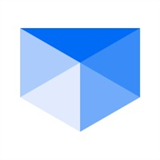
Video Production Intern
▸
- Utilised generative AI to create video content and edit using Adobe software for cybersecurity training videos.
- Collaborated in a team of 3 to develop storyboards and enhanced pre-existing scripts.
- Attended weekly meetings to discuss progress and ensure alignment with project goals.
Content Creator ▸
- Created 3 engaging social media content pieces (videos and graphics) to promote UNSW retail and leasing, showcasing the diverse range of campus restaurants.
- Collaborated in frequent meetings to gather feedback and requirements, enhancing content quality and effectiveness.
- Utilised creative skills to develop visually appealing and informative content for the target audience.
Media Subcommittee Member ▸
- Created engaging social media content for UNSW Riot Games Society under the guidance of the media director.
- Collaborated with team members to improve content based on feedback and enhance soft and hard skills.
- Contributed to the growth of the society's online presence and engagement through creative content creation.
Education
UNSW
Ascham School
Skills & Tools
Skills
Tools